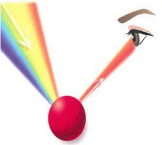
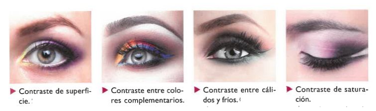

Luz Y color
Index
La Luz
Energía electromagnética que al ser percibida por el ojo humano se transmite al cerebro permitiendo el sentido de la vista.
La luz puede ser transmitida, reflejada, absorbida, dispersada.
El Color
El color de un cuerpo depende de su capacidad para absorber o reflejar determinadas longitudes de onda.
Si un objeto refleja por igual toda las radiaciones se percibe como blanco, si por el contrario, absorbe todas se ve como negro.
En la percepción del color influyen:
- El sentido de la vista
- La naturaleza de la luz
- La naturaleza del objeto sobre el que incide la luz
- Otros objetos observados simultáneamente
Color Luz Y Color Pigmento
Se denomina COLOR LUZ a la propia energía
electromagnética que es proporcionada por
cualquier fuente de luz.
A la mezcla de los colores luz se le denomina
síntesis o mezcla aditiva.
Sus colores primarios son el rojo, el violeta y el
verde

colores Primarios Y Derivados
colores complementarios
Son los que se oponen en el círculo cromático. Cada color secundario es complementario del primario que no interviene en su elaboración.
Efectos De Los Colores Complementarios
- Uno al lado del otro crean contraste
- Superponiendose se neutralizan
- Mezclandolos crean un color grisáceo
Variables, Dimensiones Y Temperatura Del Color
Variables Del Color
- Tono: determinado por la longitud de onda reflejada que predomina, es el atributo que diferencia el color
- Matriz: depende de la segunda longitud de onda reflejada y es la cualidad para distinguir un color de otro, por ejemplo, verde amarillento, azul violáceo…
- Saturacion: es la intensidad cromática o pureza de un color. Los colores muy saturados poseen mayor grado de pureza.
- Brillo: también llamado valor o luminosidad, consiste en la mayor o menor luminosidad de color.
Dimensiones De Color
- Transparencia :se visualiza el efecto de transparencia por la mezcla de tonos que se superponen.
- Tamaño Y Peso Del Color: el color produce impresiones visuales de relieve o tamaño, y peso.
Los tonos fríos y los claros parecen más ligeros, salientes y grandes.
Los cálidos y los oscuros parecen más pesados profundos y pequeños.
Temperatura Del Color
Armonía Y Contraste
Armonía
Armonizar consiste en crear equilibrio y proporción coordinando diferentes valores de color en una misma composición. Existe armonía cuando todos los colores tienen una parte común al resto de los colores componentes.

Tipos De Armonía
-
Monocroma: consisten en dos o más gradaciones dentro del mismo color.
-
Tríada equidistante: consiste en la composición de colores usando aquellos matices del círculo cromático que están dispuestos en forma de triángulo equilátero. Efecto atrevido y llamativo.
-
Armonía de colores análogos: se emplean colores que se encuentran próximos en el círculo cromático, tomando el color base como centro y agregando los contiguos.
-
Neutra o gris: se extiende la escala de grises.
-
Armonía de temperatura: consiste en agrupaciones de tonalidades de rangos fríos o cálido, creando una gama de color agradable a la vista.
Contraste
Es la impresión que produce una composición cuando los colores no tienen nada en común.
Gama De Colores
Llamamos gamas a aquellas escalas formadas
por gradaciones que realizan un paso regular de
un color puro hacia el blanco o el negro, una
serie de colores cálido o fríos y una sucesión de
diversos colores.
Para crear gama gamas de color es necesario
saber reconocer los diferentes tonos, su
composición, sus matices y su temperatura.

{kind=link}
{kind=link}
{kind=link}
{kind=link}
{kind=link}
{kind=link}
{kind=link}
{kind=link}
{kind=link}